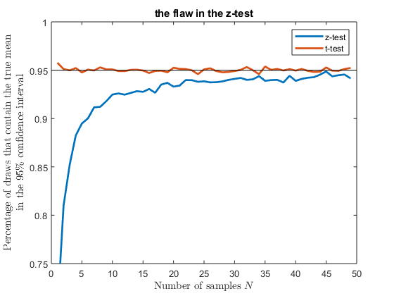

clear; close all;
REP = 10000;
figure;
count = zeros(1, 50);
for N = 2:50
z = norminv(0.975);
for r = 1:REP
sample = randn(N, 1);
mu = mean(sample);
sig = std(sample);
sem = sig/sqrt(N);
conf_start = mu - z*sem;
conf_end = mu + z*sem;
if conf_start < 0 && conf_end > 0
count(N) = count(N) + 1;
end
end
count(N) = count(N)/REP;
end
plot(count(2:end), 'LineWidth', 2); hold on;
count = zeros(1, 50);
for N = 2:50
t = tinv(0.975, N-1);
for r = 1:REP
sample = randn(N, 1);
mu = mean(sample);
sig = std(sample);
sem = sig/sqrt(N);
conf_start = mu - t*sem;
conf_end = mu + t*sem;
if conf_start < 0 && conf_end > 0
count(N) = count(N) + 1;
end
end
count(N) = count(N)/REP;
end
plot(count(2:end), 'LineWidth', 2); hold on;
legend('z-test', 't-test')
x=get(gca,'xlim');
line(x, [0.95 0.95], 'Color', 'black', 'LineWidth', 0.05, 'HandleVisibility', 'off'); hold on;
ylim([0.75 1]);
xlabel('Number of samples $N$', 'Interpreter', 'latex')
ylabel({'Percentage of draws that contain the true mean','in the 95\% confidence interval'}, 'Interpreter', 'latex')
title('the flaw in the z-test')
